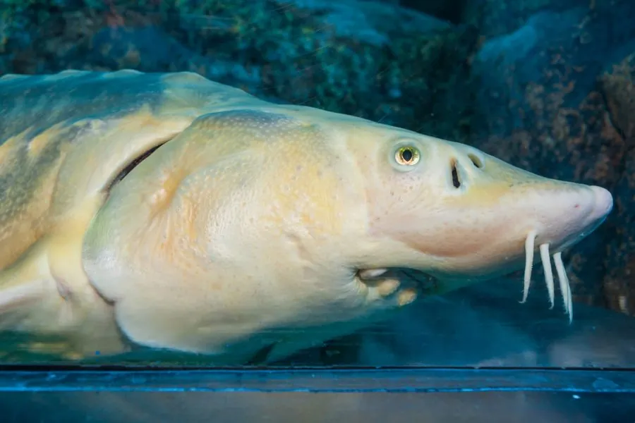

鱼类 · 动物界
中华鲟 Acipenser sinensis

长江洄游性大型鲟鱼，体披五行骨板，被称为“水中大熊猫”，是国家一级保护动物，也是现存最古老的鱼类之一。
- 分类
- 门脊索动物门纲硬骨鱼纲目鲟形目科鲟科属鲟属
- 栖息环境
- 长江干流及河口咸淡水区，成鱼在东海、黄海大陆架浅海育肥
- 地理分布
- 中国长江流域及东海、黄海近岸海域
- 保护级别
- IUCN 极危（CR）；中国国家一级保护动物
物种志
中华鲟体呈纺锤形，吻部尖长略向上翘，口位于吻的腹面、呈横裂状，没有真正的牙齿。全身裸露无鳞，只在背部中央和体侧、腹侧排列着五道坚硬的骨板，像披着一层骨甲。尾鳍为歪形尾，上叶明显长于下叶。成鱼体长一般 2–3 m，体重 200–300 kg，最大记录体长接近 4 m、体重超过 500 kg，是长江中体型最大的鱼类之一。幼鱼体色浅灰，随年龄增长转为灰褐色，腹部呈黄白色。
中华鲟是典型的江海洄游鱼类：成鱼在东海、黄海大陆架海域育肥，每年夏秋之际溯长江而上，行程近 2000 km，于 10–11 月在长江中游江段产卵。幼鱼孵化后顺流而下，在河口咸淡水区停留一段时间后入海。它性成熟很晚，雄性约 9–10 龄、雌性约 14–17 龄，寿命可达 30–40 年。由于葛洲坝、三峡等水利工程截断洄游通道，加上航运、污染和误捕，中华鲟自然繁殖规模急剧萎缩，近年多次未监测到自然产卵，目前主要依靠人工繁殖与增殖放流维持种群。
形态与习性
- 食性幼鱼食浮游动物与水生昆虫，成鱼食底栖鱼类、虾蟹和软体动物
- 体长一般 2–3 m，最大记录接近 4 m
- 体重通常 200–300 kg，最大可超过 500 kg
- 寿命约 30–40 年
- 繁殖雄性 9–10 龄、雌性 14–17 龄性成熟，10–11 月在长江中游产卵
- 洄游江海洄游，夏秋自东海溯长江而上近 2000 km
趣味知识
- 中华鲟是与恐龙同时代的孑遗鱼类，距今已有约 1.4 亿年的演化历史。
- 它没有真正的牙齿，靠可伸缩的管状口把底栖小鱼和虾蟹整只吸入。
- 中华鲟每年逆流而上近 2000 km 返回长江产卵，是长江中体型最大的鱼之一。